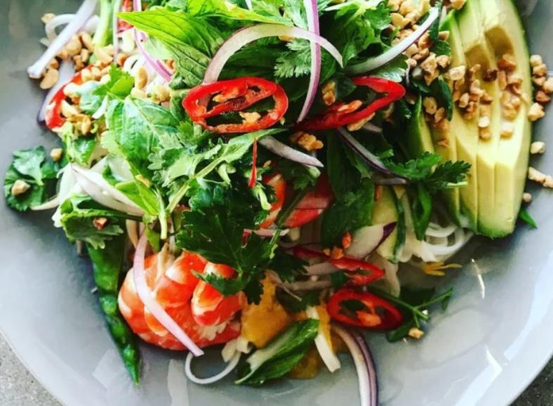

Thai Mango, Prawn and Avocado Salad

About the recipe!
The absolute perfect meal for a stinking hot day. It was light, fresh,
easy to make, zero
cooking required (unless you count soaking noodles
in boiling water as cooking) and just downright
delicious. The trusty Prawn
is one of my favourite seafoods and paired with mango, avocado and a zesty
lime and coconut dressing, it was literally Summer on a plate.
Ingredients
- Peeled fresh cooked prawns, the quantity is up to you
- 1 mango, cheeks cut off, skin removed and sliced thinly
- 250gm of rice stick noodles (I use Chang’s Pad Thai brand)
- 150gm of snow peas, top removed and sliced diagonally
- 1 lebanese cucumber, halved lengthways, deseeded and sliced diagonally
- Two handfuls of bean sprouts
- 1 ripe but firm Avocado, halved skin removed and sliced thinly
- 1 cup of coriander leaves
- 1/2 a cup of mint leaves
- 1/2 a red onion, sliced very finely, top to bottom/li>
- 1 red chilli, finely sliced diagonally (seeds removed if you prefer)
- 1 maraschino cherry for garnish
- 1/2 cup of toasted granulated peanuts
- Lime wedges to serve
Dressing
- 1 cup of coconut milk
- 1 tbs of rice wine vinegar
- 2 tbs of fish sauce
- 1 heaped tbs of brown sugar
- Juice of 1 lime
Steps
- Place the noodles in a large, heat proof bowl and pour over boiling water.
Allow to soak for 10 – 12 minutes or until tender before draining and rinsing
well under cold water.
- To make the dressing, whisk all of the ingredients together until the sugar has
dissolved. Have a taste and adjust if necessary, you should have the perfect balance
of sweet, salty and sour.
- Place the snow peas in a small bowl and cover with boiling water for two minutes until
bright green. Drain and run under cold water to stop the cooking process.
- Place the noodles and snow peas back in the large bowl along with the bean shoots, cucumber
and mango slices. Pour over half of the dressing and toss gently to combine. Divide the noodle
mixture between four serving bowls and place the prawns on top in a lovely pile.
- Toss the coriander, mint and red onion together with your fingers and pile on top of the prawns.
Fan the avocado out gently with your fingers and place it to the side of the bowl.
- Drizzle over the remaining dressing and top with a smattering of peanuts and the chilli slices.
Serve with lime wedges and enjoy with a lovely glass of Pinot Gris.